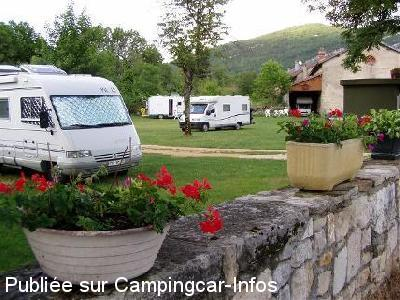
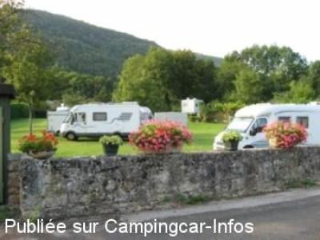
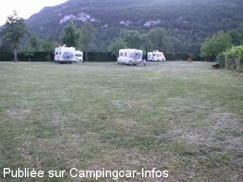
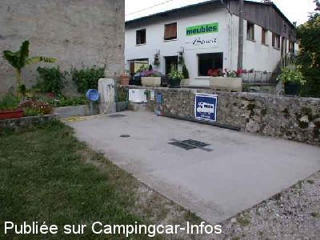

ASN = Aire de services avec stationnement nuit possible de :
JEURRE
(N° 158)
Accès/adresse :
35 rue Principale
39360 JEURRE
39360 JEURRE
Latitude : (Nord) 46.36574° Décimaux ou 46° 21′ 56′′
Longitude : (Est) 5.70615° Décimaux ou 5° 42′ 22′′
Tarif : 2015
Stationnement : 5 €
Électricité : 3 €
Services : 2 €
Type de borne : Plateforme
Services :


Autres informations :
Ouvert de mai à octobre
15 emplacements
6 branchements électricité
Tel : +33(0)584 424 263

Le 27/05/2012 par blanco

Le 15/10/2007 par rolfpeter.Friedrich

Le 16/04/2005 par Martshal

Le 16/04/2005 par Martshal
de
varnier agnes
le 15/08/2015 :
§nous avons dormi sur cette aire le 27/7/2015, très propre, superbe, près de la route mais pas bruyante la nuit, les tarifs ont augmenté 5 euros le stationnement, 2 euros forfait eau/vidange et 3 euros branchement éléctrique mais ces prix sont justifiés, nous ne sommes pas les uns sur les autres et tout a un cout - à recommander
§nous avons dormi sur cette aire le 27/7/2015, très propre, superbe, près de la route mais pas bruyante la nuit, les tarifs ont augmenté 5 euros le stationnement, 2 euros forfait eau/vidange et 3 euros branchement éléctrique mais ces prix sont justifiés, nous ne sommes pas les uns sur les autres et tout a un cout - à recommander
de
rn
le 22/08/2013 :
très belle aire et merci aux propriétaires sympathiques dommage que la route soit si prés, le boulanger passe tous les jours et il faut aller voir la recette du papet bonnes balades
très belle aire et merci aux propriétaires sympathiques dommage que la route soit si prés, le boulanger passe tous les jours et il faut aller voir la recette du papet bonnes balades
de
Nath & Chris 28
le 11/08/2013 :
Aire très agréable,propriétaires accueillants, dommage que la route soit si proche et si bruyante.
Aire très agréable,propriétaires accueillants, dommage que la route soit si proche et si bruyante.
de
Brigitte BRAUD
le 24/10/2012 :
Merci aux propriétaire de cette aire magnifique et aux c-caristes pour leurs commentaires fiables.
Merci aux propriétaire de cette aire magnifique et aux c-caristes pour leurs commentaires fiables.
de
François Vivianne Bougrière-City
le 08/09/2012 :
§
Passés le 7 septembre 2012 - excellente aire bien entretenue avec tous les services : 5 euros la nuit, 2 euros électricité (il y a 6 prises) - le village est bien décoré sans aucun commerce - une halte sympathique et bien conçue
§
Passés le 7 septembre 2012 - excellente aire bien entretenue avec tous les services : 5 euros la nuit, 2 euros électricité (il y a 6 prises) - le village est bien décoré sans aucun commerce - une halte sympathique et bien conçue
de
MATTIONI Daniel
le 11/01/2011 :
Nous sommes nouveaux camping-caristes, je dis nous car je suis passé sur cette aire au printemps 2010, avec mon frère, lui aussi nouveau camping-cariste.
Merci à M et Mme BENOIT, pour leur accueil, leur gentillesse, leur bonne humeur et le bonheur qu'il sont capable de vous donner dans un si bref passage.
C'est au grand merci que nous voulions tranmettre, mais surtout leurs souhaiter nos meilleurs voeux pour 2011.
A bientôt.
Carlo, Marie Paule des Vosges et Josiane et Daniel de La Rochelle.
Nous sommes nouveaux camping-caristes, je dis nous car je suis passé sur cette aire au printemps 2010, avec mon frère, lui aussi nouveau camping-cariste.
Merci à M et Mme BENOIT, pour leur accueil, leur gentillesse, leur bonne humeur et le bonheur qu'il sont capable de vous donner dans un si bref passage.
C'est au grand merci que nous voulions tranmettre, mais surtout leurs souhaiter nos meilleurs voeux pour 2011.
A bientôt.
Carlo, Marie Paule des Vosges et Josiane et Daniel de La Rochelle.
de
PAPIFOOT
le 19/08/2010 :
Je confirme les commentaires précédents. Mme BENOIT se fait un plaisir d'accueillir les camping-caristes et est prête à rendre le moindre service. Nous y sommes passés le 30 juin et étions seuls sur cette immense prairie. Que du bonheur !
Je confirme les commentaires précédents. Mme BENOIT se fait un plaisir d'accueillir les camping-caristes et est prête à rendre le moindre service. Nous y sommes passés le 30 juin et étions seuls sur cette immense prairie. Que du bonheur !
de
Stéphane Dessors
le 05/07/2010 :
Bonjour, j'habite à Oyonnax, à 15km de cette aire. Je m'y arrête souvent pour vidanger avant de rentrer chez moi. L'aire est toujours impeccablement entretenue. J'ai toujours mis davantage dans la boite que les 2€ demandés car ils le méritent vraiment! Petit bonus: une randonnée pour les enfants à la sortie du village. Vous allez pénétrer dans un livre de contes (au sens propre !).
Bonjour, j'habite à Oyonnax, à 15km de cette aire. Je m'y arrête souvent pour vidanger avant de rentrer chez moi. L'aire est toujours impeccablement entretenue. J'ai toujours mis davantage dans la boite que les 2€ demandés car ils le méritent vraiment! Petit bonus: une randonnée pour les enfants à la sortie du village. Vous allez pénétrer dans un livre de contes (au sens propre !).
de
Manu
le 26/07/2009 :
Aire parfaite (calme et pratique). La propriétaire est très accueillante. La boulangère passe le matin. Cela mérite bien les tarifs proposés. Je recommande.
Aire parfaite (calme et pratique). La propriétaire est très accueillante. La boulangère passe le matin. Cela mérite bien les tarifs proposés. Je recommande.
de
BIBARD Philippe
le 18/09/2008 :
Nous sommes de la région et passons souvent le week-end à Jeurre car je suis pêcheur et la rivière est toute proche. Proprio super sympa, aire super calme et sécurisante. Lorsque la météo est belle, les journées sont trés agréables, les services sont facilement utilisables et propres.
Dommage que les aires comme celle ci ne soit pas plus nombreuses. Merci aux propriétaires.
Nous sommes de la région et passons souvent le week-end à Jeurre car je suis pêcheur et la rivière est toute proche. Proprio super sympa, aire super calme et sécurisante. Lorsque la météo est belle, les journées sont trés agréables, les services sont facilement utilisables et propres.
Dommage que les aires comme celle ci ne soit pas plus nombreuses. Merci aux propriétaires.
de
Delaby
le 29/04/2007 :
Aire très sympathique, facile à remplir et à vidanger. Encore merci de nous faire confiance en cas d'absence.
Aire très sympathique, facile à remplir et à vidanger. Encore merci de nous faire confiance en cas d'absence.
de
claude 35
le 29/07/2006 :
Aire très bien - toujours pas de commerce à proximité - Assez bruyant à cause de la circulation des poids lourds sur la route à cent mètres .
Aire très bien - toujours pas de commerce à proximité - Assez bruyant à cause de la circulation des poids lourds sur la route à cent mètres .